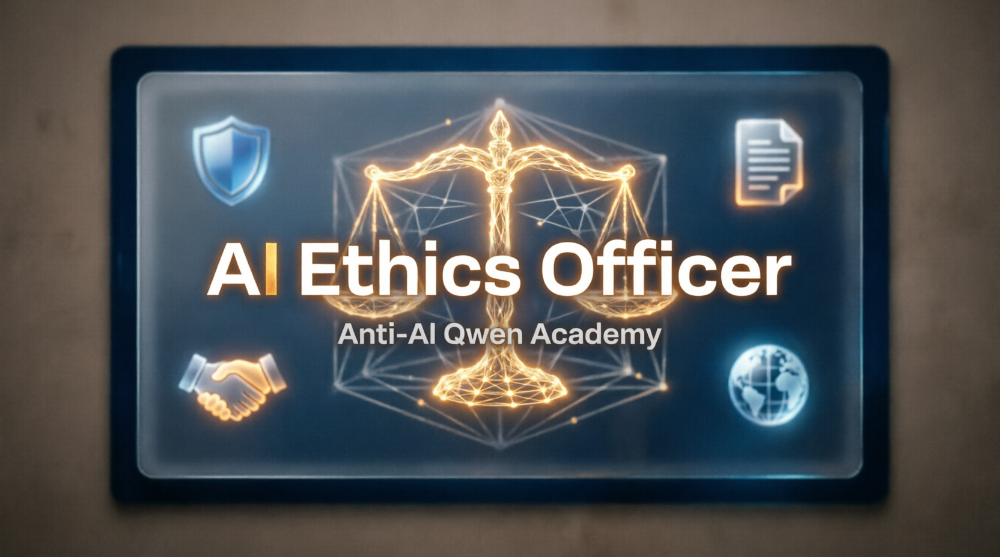
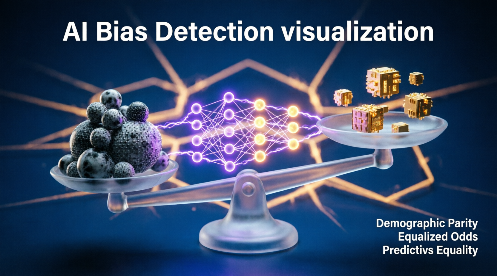
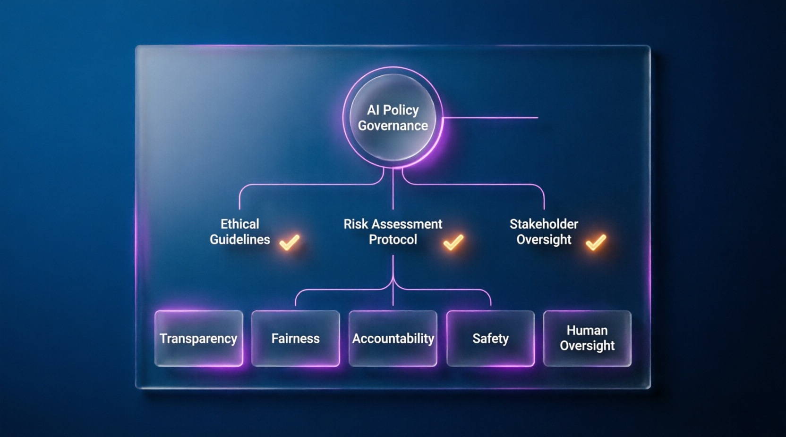
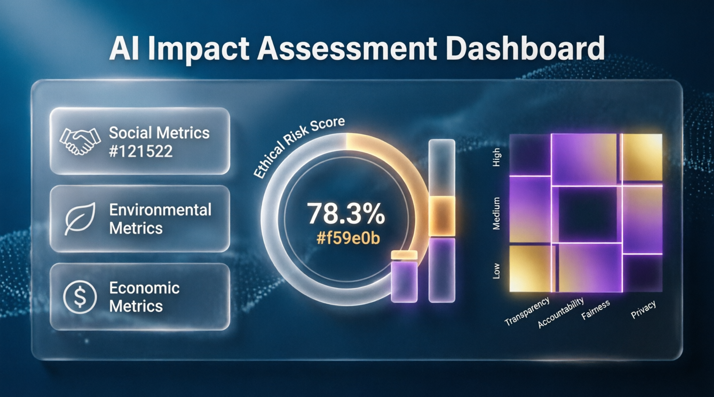
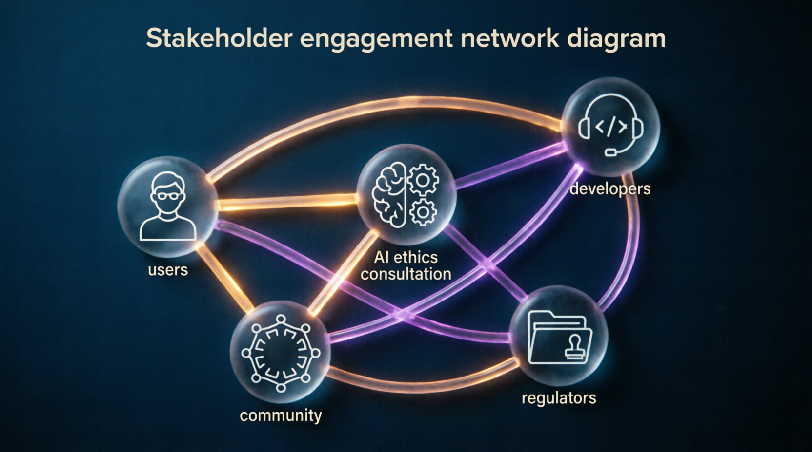
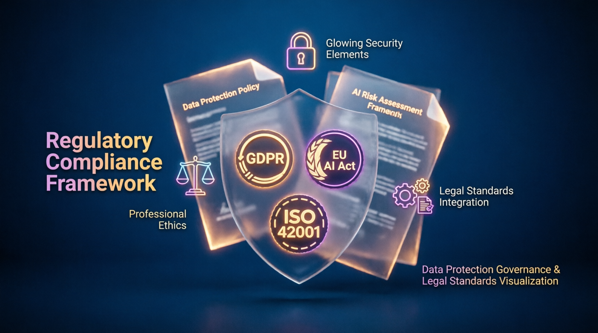

anti-ai-qwen-academy • AI Ethics Officer
Ethics First • 100% Offline • 10 days • Responsible AI Implementation


⚖️
📋
👥
🔐
📊🏆 CERTIFICATE REQUIREMENTS
Ethics Frameworks + Qwen formats
No mistakes
5 cases in Qwen formats
⚠️ Perfect results → Library Contributor access
📊 Progress
⚠️ All data will be deleted
🛠️ AI Ethics Officer Toolkit
Interactive tools for responsible AI implementation practice
🔍 Ethics Audit Builder
Create ethics audit reports with risk assessment parameters
👥 Stakeholder Mapper
Map stakeholders and their ethical concerns for AI systems
⚠️ Risk Detector
Visualize ethical risks in your AI system design
📋 Policy Generator
Generate responsible AI policy document for your organization
📚 AI Ethics Officer Specialist Library
Role documentation, ethics frameworks, regulatory guides, resources
⚖️ AI Ethics Officer
Guardian of responsible, transparent, and socially-oriented AI implementation
🔑 Key Mission
Ensure AI systems serve human values, not vice versa. Transform ethical principles into working procedures, audits, and policies.
🧩 Responsibilities
- Bias & discrimination audits in models and data
- Develop internal responsible AI standards and codes of conduct
- Conduct team training, moderate ethical discussions
- Track regulations, prepare audit documentation
- Investigate ethical incidents, ensure public accountability
🛠️ Tools
AI Fairness 360, SHAP, LIME, Responsible AI Toolkit, Policy templates, Stakeholder mapping frameworks.
📊 KPIs
- 95%+ fairness metrics compliance in audited systems
- 0 critical ethical violations in deployed AI systems
- 100% stakeholder consultation for high-risk AI
- All policies versioned, reviewed quarterly, publicly accessible
🎯 Why organizations need AI Ethics Officers
As AI transforms industries, Ethics Officers ensure technology serves society. They bridge technical teams, legal compliance, and public trust — preventing harm before deployment.
🔍 Ethics Audit
Identify bias, discrimination, privacy risks in AI models and data pipelines
qwen_ethics_audit_report.md📋 Policy Design
Develop internal standards, codes of conduct, ethical review checklists
qwen_responsible_ai_policy.json👥 Stakeholder Engagement
Map affected groups, conduct consultations, ensure inclusive design
qwen_stakeholder_map.csv⚖️ Regulatory Compliance
Track EU AI Act, ISO 42001, GDPR, 152-ФЗ, prepare audit documentation
qwen_compliance_matrix.yaml📊 Impact Assessment
Evaluate social, environmental, economic impacts of AI deployment
qwen_impact_assessment.json🛠️ Graduate Skills
🔹 Hard Skills
- ML lifecycle understanding, fairness metrics, explainability tools
- Legal frameworks: GDPR, 152-ФЗ, EU AI Act, sectoral regulations
- Ethics frameworks: consequentialist, deontological, virtue ethics
- Risk assessment methodologies, stakeholder mapping, impact evaluation
- Policy drafting, audit reporting, compliance documentation
🔹 Soft Skills
- Critical thinking: identify hidden assumptions, long-term consequences
- Communication: translate technical/legal norms into accessible guidance
- Mediation: facilitate ethical discussions, resolve value conflicts
- Cultural sensitivity: respect diverse values, avoid ethnocentric bias
- Courage: speak truth to power, advocate for vulnerable groups
💼 Where do AI Ethics Officers work?
Formats: Full-time • Consultant • Volunteer • Grant-funded
📈 Path to AI Ethics Officer Specialist
- Days 1-3: Ethics foundations, AI lifecycle, incident case studies
- Days 4-6: Bias detection, stakeholder mapping, risk assessment
- Days 7-8: Policy drafting, regulatory compliance, audit reporting
- Day 9: Portfolio in Qwen-compatible ethics formats
- Day 10: FINAL EXAM (10/10)
📦 Qwen AI Ethics Officer Reporting Formats
🤝 SUPPORT THE PROJECT 💙
App is free. Always will be.
Support development: